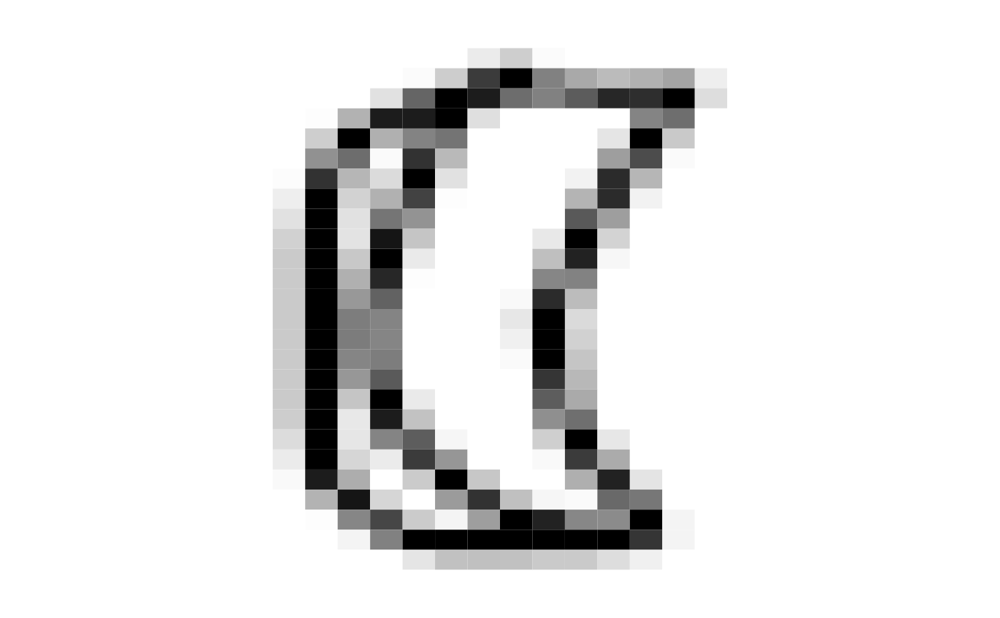

This data is a subset of images from https://quickdraw.withgoogle.com The subset was created using the quickdraw R package at https://huizezhang-sherry.github.io/quickdraw/. It has 6 different groups: banana, boomerang, cactus, flip flops, kangaroo. Each image is 28x28 pixels. This data would be used to train a classification model.
Details
- V1-V784
grey scale 0-255
- word
what the person was asked to draw
- id
unique id for each sketch
Examples
require(ggplot2)
data("sketches_train")
x <- sketches_train[sample(1:nrow(sketches_train), 1), ]
# print(x$word)
xm <- data.frame(gry=t(as.matrix(x[,1:784])),
x=rep(1:28, 28),
y=rep(28:1, rep(28, 28)))
ggplot(xm, aes(x=x, y=y, fill=gry)) +
geom_tile() +
scale_fill_gradientn(colors = gray.colors(256, start = 0, end = 1, rev = TRUE )) +
theme_void() + theme(legend.position="none")
